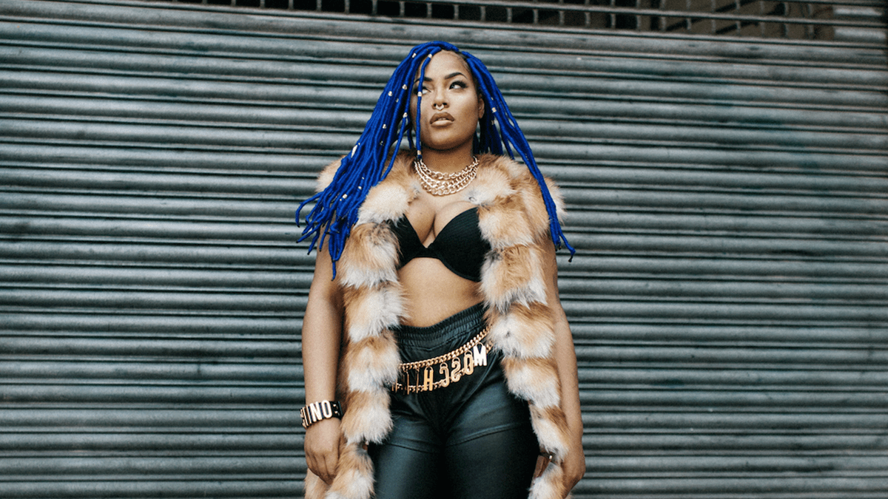
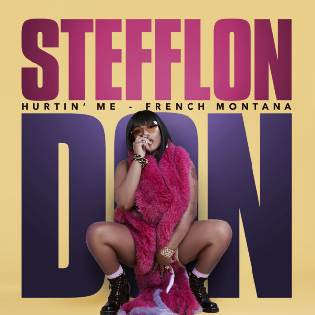
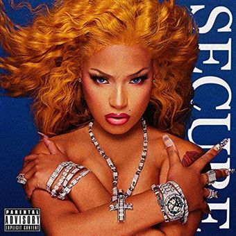
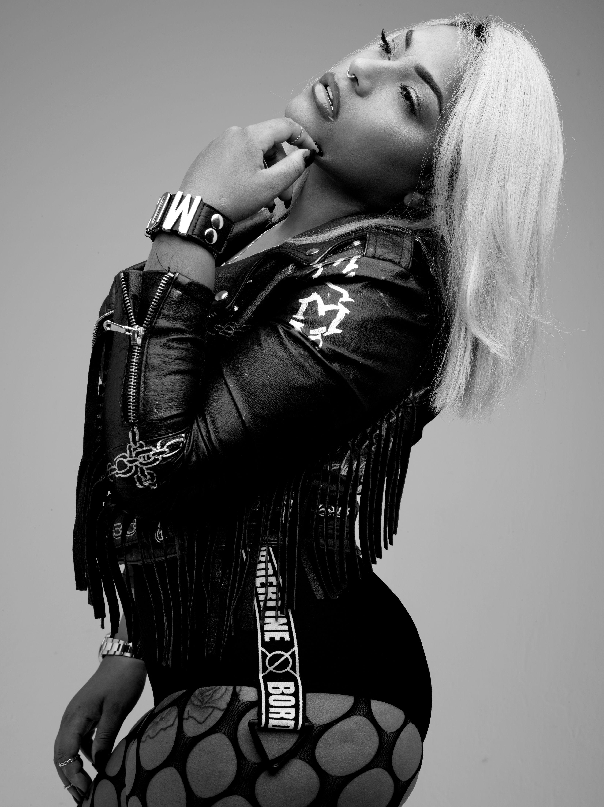
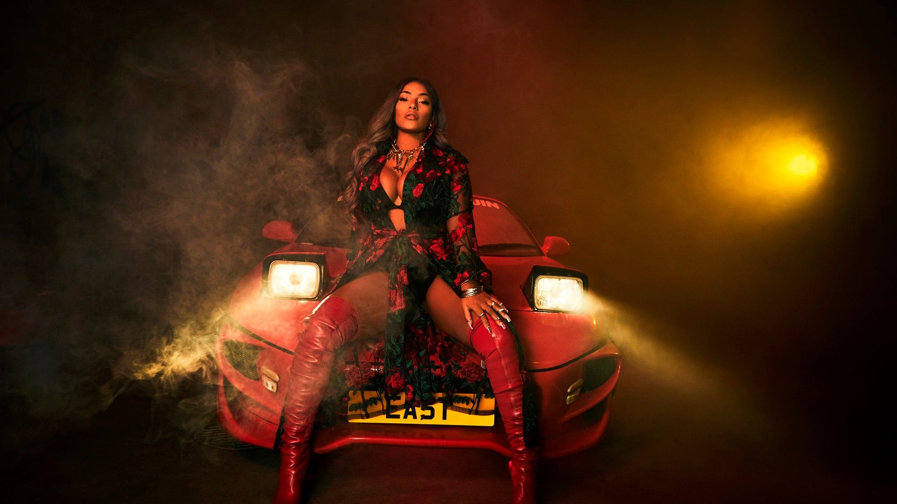
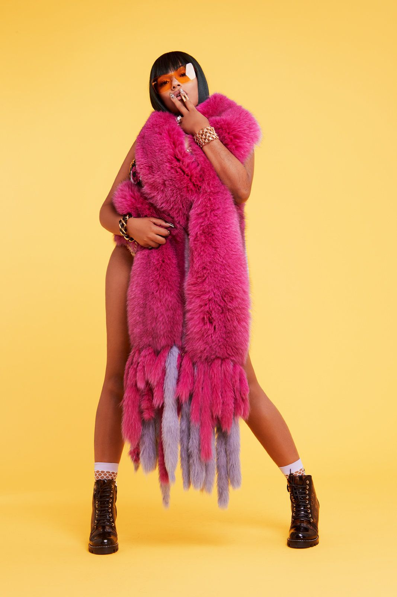
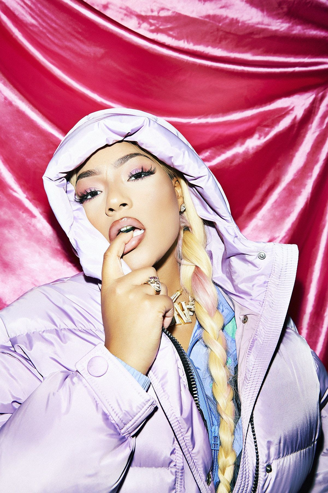

Dans un paysage musical souvent gris, une flamme a jailli. Un mélange incandescent de chaleur dancehall jamaïcaine, de swagger rap londonien et d'une sensibilité pop imparable. Cette flamme, c'est Stefflon Don. Artiste sans frontières et sans complexes, elle a brisé les codes pour devenir une voix féminine puissante et incontournable sur la scène mondiale.
Des Pays-Bas à Londres, la Naissance d'une "Don"

Née Stephanie Victoria Allen le 14 décembre 1991 à Birmingham, au Royaume-Uni, de parents jamaïcains, son destin est immédiatement multiculturel. À cinq ans, sa famille déménage à Rotterdam, aux Pays-Bas. C'est là qu'elle grandit, baignant dans la musique et apprenant à parler couramment le néerlandais. Cette enfance européenne, combinée à ses racines caribéennes, forge une artiste à la vision unique.
De retour à Londres à 14 ans, elle travaille comme décoratrice de gâteaux et coiffeuse avant que la musique ne prenne toute la place. Elle commence par des remixes et des freestyles qui créent un buzz underground. C'est là qu'elle se crée son alter ego, "The Don", une version d'elle-même pleine de confiance, audacieuse et prête à conquérir le monde. Sa mixtape Real Ting Mixtape en 2016 est la carte de visite explosive qui mettra le feu aux poudres.
Des Mixtapes aux Hits Mondiaux
Plutôt qu'une longue série d'albums, sa carrière est marquée par des projets percutants et des singles qui ont fait le tour du globe.
Real Ting Mixtape
2016 - Le projet qui a tout lancé. Un concentré brut de son talent, mêlant rap, R&B et dancehall, qui a attiré l'attention de l'industrie.

"Hurtin' Me" ft. French Montana
2017 - La fusée. Ce tube planétaire la propulse sur la scène internationale, prouvant que sa formule est un succès mondial.

Secure
2018 - Une démonstration de force. Cette mixtape est une déclaration d'intention, montrant toute l'étendue de sa polyvalence et de son assurance.
La Reine des Featurings : Un Pont Musical Mondial
L'un des plus grands talents de Stefflon Don est sa capacité à se fondre dans n'importe quel univers musical pour y apporter sa touche unique.
Une Artiste Caméléon
Elle est la collaboratrice de rêve. Du hip-hop US (Lil Baby, French Montana) à la pop latine (Luis Fonsi), en passant par le grime britannique (Wiley) et l'afrobeats (Burna Boy, Rema), Stefflon Don navigue entre les genres avec une aisance déconcertante. Son flow adaptable, son charisme et son authenticité font d'elle une artiste demandée dans le monde entier, servant de pont entre les continents et les scènes musicales.
Les Jalons d'une Reine
- Single de Platine pour son tube "Hurtin' Me" au Royaume-Uni.
- BET Award en 2018 en tant que "Best International Act".
- NME Award pour "Best New Artist" en 2017.
- Première rappeuse britannique à figurer sur la prestigieuse couverture "Freshman Class" du magazine XXL.
- Des milliards de streams et de vues, confirmant son statut de star mondiale.
Icône de Style : Audace et Couleurs
Son style est aussi vibrant et audacieux que sa musique. Un festival de couleurs, de perruques et de confiance en soi.




Plus qu'une Rappeuse, une Force de la Nature
Stefflon Don est la preuve vivante que les frontières n'existent pas dans la musique moderne. Elle est le symbole d'une génération multiculturelle, une artiste qui puise sa force dans ses racines diverses pour créer quelque chose d'universellement puissant. Son message est clair : soyez vous-même, sans excuses et avec audace. Le trône est à elle, et son règne est loin d'être terminé.